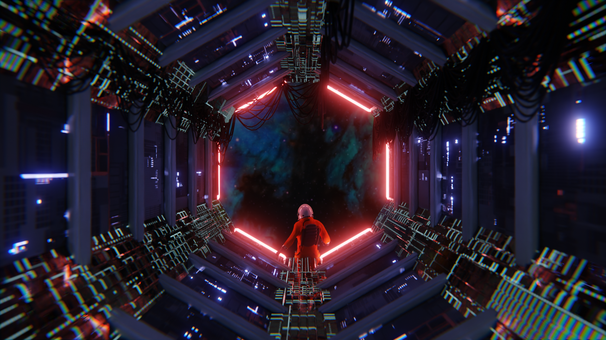

About Me & My Studies
My background, previous studies, and relevant hobbies.
About Me
Hi, I'm Ewoud Janus! I'm doing my Master's in Interaction Technology right now at the University of Twente. My background is mostly in creative tech and human-computer interaction. I really just like figuring out how to make complex systems actually easy and natural for people to use.
Why Social Robot Design?
I think this course is a great way to understand where social robots actually make sense, who they help and why they matter. We touch on some of this stuff in other classes but having a dedicated course to really get a grasp of the field is super nice. It also ties in perfectly with what I want to do in interaction design. Feel free to explore my other project work, including pomodoro pet, hospital at home, and mastering tinkering.
Previous Studies
I got my Bachelor's in Creative Technology (BSc) here at the University of Twente too. During that program I picked up a pretty broad foundation in software engineering, sensor electronics and UX design.
Graduation Project: The Elevator-Nudging Robot
For my bachelor graduation project I built an interactive robot that tried to nudge people to take the stairs instead of the elevator. It used motion sensors to detect if someone was waiting for the elevator, and when it saw someone it would literally try to talk them out of it using different voices and playful behaviors. This project is what really got me into how physical and social interfaces can change human behavior in real life.
Relevant Hobbies
3D Modeling
I really enjoy 3D modeling and rendering (mostly in Blender and Maya). I use it alot to visualize projects for university work. However it is also a big creative outlet for me. Check out my 3D renders collection.


Playing the Piano
Music has always been a big creative outlet for me, especially playing the piano. It's just a great way to relax and mess with rhythm and flow. My music background actually ends up influencing how I approach things like timing and sound design in my electronics projects too.